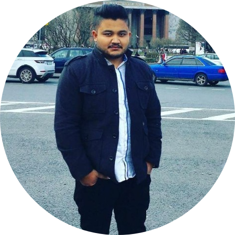

| < |
Curriculum VitaeAbhinov Abhilekh Dutta
B.Tech Geosciences Engineering |
ACADEMIC BACKGROUND
| Years(s) | Qualification – Degree / Diploma / Certificate |
Board | College/ Institute/ University |
% / CGPA |
|---|---|---|---|---|
| 2018-2019 | Post Graduate Diploma in GIS and Remote Sensing |
- | Accelcraft Institute of
Geoinformatics Technology, Guwahati |
- |
| 2015-2016 | Post Graduate Diploma in Computer Application |
- | Computec (Computer Education Division), Jorhat |
70.5% |
| 2009-2013 | B. Tech Geosciences Engineering |
University of Petroleum & Energy Studies |
College of Engineering Studies, Dehradun |
2.87(4) (78%) |
| 2009 | All India Senior Secondary School Examination |
Central Board of Secondary Education |
Kalka Public School, New Delhi |
71.6% |
| 2007 | All India Secondary School Examination |
Indian Council of Secondary Examination |
Carmel School, Jorhat Assam |
84.5% |
Company Name: SATPALDA Geospatial Services
Address: Vasundhara, Ghaziabad-201012, Uttar Pradesh, India
Duration: 06/02/2020- 12/05/2021
Company Name: M/s Prabal Kumar Goswami, Registered Qualified Person,
Regd. No. – DGM/RQP/37/2018, Directorate of Geology and Mining, Govt. of Assam.
Duration: 1/11/2019 – Present
| ArcGIS | 🌟🌟🌟🌟🌟 | Pix4D | 🌟🌟🌟🌟🌟 |
| Microstation | 🌟🌟🌟🌟 | ERDAS Imagine | 🌟🌟🌟 |